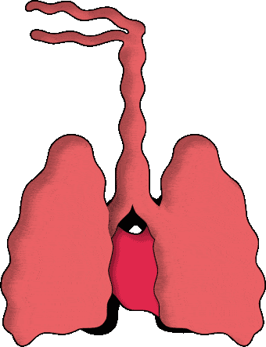
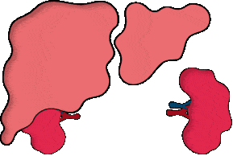
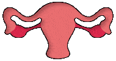

Revealed: air pollution may be damaging ‘every organ in the body’
Exclusive: Comprehensive analysis finds harm from head to toe, including dementia, heart and lung disease, fertility problems and reduced intelligence
Lungs and heart
The harmful effects of dirty air shown in the review begin when the pollution is inhaled.
This results in breathing problems, from asthma to emphysema to lung cancer. There is now overwhelming evidence that air pollution results in serious harm not only to the lungs, but also to the heart. Here it increases the risk of heart attacks as arteries narrow and muscles weaken
One reason for the wide-ranging damage from air pollution is that very small particles can penetrate the lungs and be carried around the body. “They land in the organs directly,” Schraufnagel said.
Brain and mind
The harmful effects of dirty air shown in the review begin when the pollution is inhaled.
This results in breathing problems, from asthma to emphysema to lung cancer. There is now overwhelming evidence that air pollution results in serious harm not only to the lungs, but also to the heart. Here it increases the risk of heart attacks as arteries narrow and muscles weaken
One reason for the wide-ranging damage from air pollution is that very small particles can penetrate the lungs and be carried around the body. “They land in the organs directly,” Schraufnagel said.
Abdominal organs
The harmful effects of dirty air shown in the review begin when the pollution is inhaled.
This results in breathing problems, from asthma to emphysema to lung cancer. There is now overwhelming evidence that air pollution results in serious harm not only to the lungs, but also to the heart. Here it increases the risk of heart attacks as arteries narrow and muscles weaken
Reproduction, babies and children
The harmful effects of dirty air shown in the review begin when the pollution is inhaled.
This results in breathing problems, from asthma to emphysema to lung cancer. There is now overwhelming evidence that air pollution results in serious harm not only to the lungs, but also to the heart. Here it increases the risk of heart attacks as arteries narrow and muscles weaken



